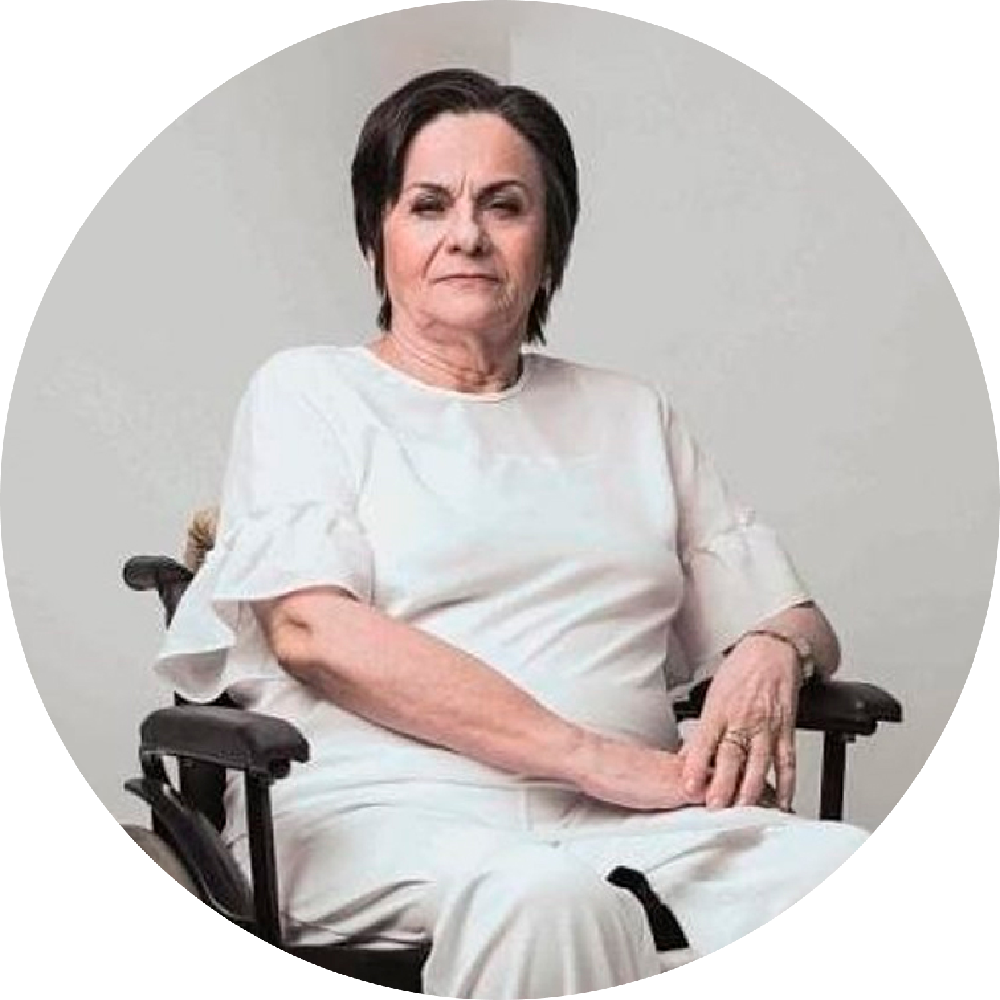
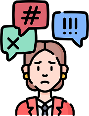
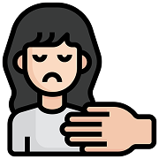

Papo de Homem para Homem: A Mudança Começa pelo Diálogo
A violência doméstica é um problema de toda a sociedade.
Este projeto é uma iniciativa da Polícia Judiciária Civil do Estado de Mato Grosso criada para conscientizar o público masculino.
A verdadeira mudança vem por meio de informação e ação. Esta é uma oportunidade de abrir um diálogo honesto, encorajando homens a assumirem o protagonismo na luta pelo fim da violência contra a mulher.
Junte-se a nós nesta causa. A coragem de mudar começa agora.
Lei Maria da Penha: Para Que Serve?
Todas as pessoas têm direito a viver sem violência.
Por vezes, é necessário que haja uma atenção especial do Estado para garantir esse direito àquelas pessoas que são mais vulneráveis ou sofrem preconceitos, como idosos, crianças e adolescentes, pessoas com deficiência e mulheres. Por isso foi criada a Lei Maria da Penha, para garantir seu direito contra a violência doméstica e familiar.
A Lei Maria da Penha não "favorece" as mulheres. Ela garante que elas tenham o mesmo direito que os homens: o de não sofrerem violência doméstica e familiar.

A criação da Lei Maria da Penha não significa que os homens estejam desamparados pela lei: o homem que tiver seus direitos violados pode registrar ocorrência policial. Pelo Código Penal Brasileiro, a pena para a mulher que agride fisicamente seu parceiro é a mesma prevista para o homem agressor (artigo 129, §9º do CPB). Caso haja perseguição, há previsão de perturbação da tranquilidade na Lei de Contravenções Penais (artigo 65). Ele também pode solicitar a medida de proibição de contato (artigo 319 do Código de Processo Penal).
Histórico da Lei
A Lei Maria da Penha foi criada para responder ao problema histórico agressão contra as mulheres.
Infelizmente, pesquisas indicam que a maior parte dos assassinatos de mulheres (feminicídios) e de outras violências ocorrem em ambientes onde elas deveriam se sentir mais protegidas (como na própria casa), e cometidos por parte de quem menos esperam (maridos, namorados, filhos e ex-parceiros).
No Brasil, cerca de 80% dos casos de agressão contra mulheres foram cometidos por parceiros ou ex parceiros.
O Brasil é o 5º país do mundo em número de assassinatos de mulheres.
Entre 1980 e 2013, ocorreram no Brasil mais de 100.000 assassinatos de mulheres.
E as estatísticas indicam que esse número aumenta a cada ano — mesmo após a criação da Lei Maria da Penha.
Assim, a Lei Maria da Penha é o resultado da luta de milhares de mulheres que foram vítimas da violência. Foi elaborada após a cobrança da Organização dos Estados Americanos – OEA (o órgão internacional responsável por denunciar a violação de acordos internacionais), para que o governo do Brasil tomasse providências no sentido de proteger as mulheres de seu país contra esse tipo de violência – infelizmente tão comum em nossa cultura.
A Lei nº 11.340, conhecida como “Lei Maria da Penha”, foi sancionada pelo Presidente da República em 2006. A lei brasileira que protege as mulheres contra a violência recebeu o nome de Maria da Penha em homenagem à farmacêutica cearense Maria da Penha Maia Fernandes. Vítima de diversas violências graves por parte do marido, ela quase foi morta e sofreu sequelas graves (como a perda do movimento das pernas). Maria da Penha lutou para proteger a própria vida e para mostrar à sociedade a importância de se proteger as mulheres da violência sofrida no ambiente mais inesperado, seu próprio lar, e advinda da pessoa de quem menos se espera: seu companheiro, marido ou namorado.

A Lei Maria da Penha é considerada uma das legislações de proteção à mulher mais avançadas do mundo. Dentre os avanços que ela traz estão:
-
A criação de Juizados especializados no assunto para garantir uma melhor compreensão de servidores da Justiça e de juízas e juízes sobre o problema, além fazer com que o processo judicial seja mais rápido;
-
As medidas protetivas de urgência;
-
A mulher só pode solicitar o arquivamento do processo judicial perante a juíza ou juiz, o que garante que ela seja ouvida com maior cuidado, também evitando que o processo seja arquivado devido à ameaças, chantagens ou intimidações;
-
A compreensão do problema a partir da questão de gênero.
É importante ressaltar que as diferenças biológicas entre homens e mulheres não justificam diferenças sociais como diferenças salariais, imposições de como se comportar, o que vestir, como expressar seus sentimentos. Essas são diferenças artificiais construídas na cultura que as colocam em uma posição de subordinação.
A Constituição Federal Brasileira garante:
“Art. 5° Todos são iguais perante a lei, sem distinção de qualquer natureza, garantindo-se aos brasileiros e aos estrangeiros residentes no País a inviolabilidade do direito à vida, à liberdade, à igualdade, à segurança e à propriedade, nos termos seguintes: I – homens e mulheres são iguais em direitos e obrigações, nos termos desta Constituição;”
Machismo e Violência
Em nossa cultura é predominante o pensamento de que homens e mulheres devem agir de determinada maneira: meninos são incentivados a valorizar a força física, dominação, agressividade e satisfação de seus desejos, enquanto as meninas são reconhecidas pela sua beleza, dependência, sentimentalismo, passividade e cuidado com os outros.
Separar o que é esperado das mulheres e dos homens as coloca em posições desvantajosas na sociedade, enquanto o homem é colocado em uma posição de poder e dominação: isso é machismo.
Exemplos de práticas machistas: atribuir somente à mulher a responsabilidade pela casa e pelos filhos; achar que é obrigação da mulher satisfazer o marido sexualmente, mesmo contra a própria vontade; definir profissões "de homem" e "de mulher", entre outros.
O que o machismo tem a ver com a violência doméstica?
Muitas vezes, os homens se sentem no direito de usar a violência caso a mulher não aceite "cumprir o papel" que a cultura lhe impôe.
A Lei Maria da Penha vem para equilibrar essa situação e lembrar a todos que ninguém pode usar a violência para dominar outra pessoa.
Tipos de Violência
Lembre-se: a violência doméstica pode assumir diversas formas, é progressiva e muitas vezes começa de forma sutil, como uma ofensa moral ou controle patrimonial, antes de chegar à agressão física. Entender esses cinco tipos é fundamental para garantir que nenhuma mulher tenha sua dignidade ou integridade violada.
Física
Espancamento, sacudidas, apertões, arremesso de objetos, queimaduras, uso de armas...
Psicológica
Considerada a "porta de entrada" para outros tipos de violência, incluindo ameaças, humilhações, isolamento forçado, vigilância constante, insultos, chantagem...

Sexual
Relações sexuais forçadas (inclusive dentro do casamento), impedir o uso de métodos contraceptivos, forçar o aborto ou a prostituição...

Patrimonial
Retenção, subtração, destruição parcial ou total de seus objetos, incluindo rasgar fotos/documentos, quebrar o celular, esconder o cartão do banco, reter o salário ou impedir o trabalho...
Moral
Calúnia, difamação, injúria, atacando a mulher perante a sociedade, como acusar a mulher de traição (sem provas), expor sua vida íntima ou desqualificá-la publicamente...
Papo Reto: Entenda na Prática
Deslize para a direita para ver outros vídeos